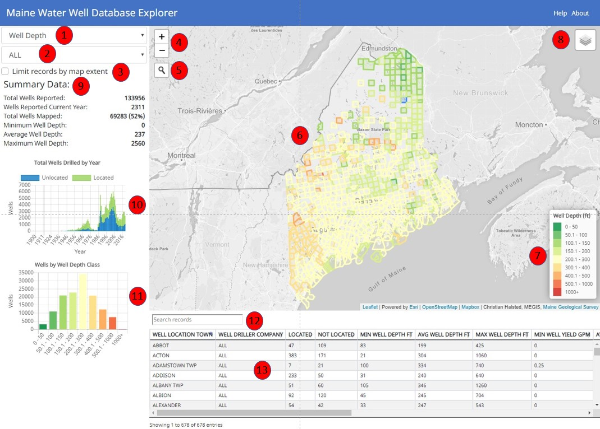
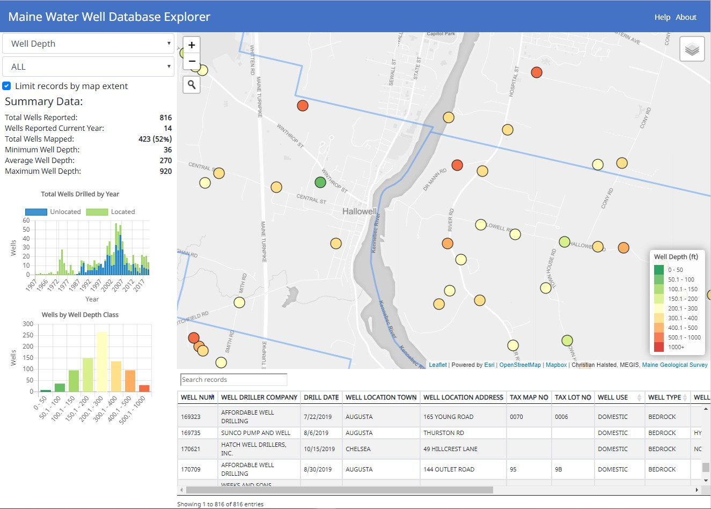

Help
The Maine Water Well Database Explorer is a map, data, and graph coordinated visualization of driller reported water well data. It shows statewide, town-level, and well specific summary statistics and attribute information.

Interface Description
- Use this pick list to select the well characteristic to show on the map and in the graphs. Well depth, well yield, depth to bedrock, or casing length can be selected. After changing this selection the map (6), legend (7), summary statistics (9), well by class graph (11), and table (13) will update.
- Use this pick list to limit the well data shown on the map and in the graphs to single well driller. By default all well driller data is shown. After selecting a well driller,
- When this check box is selected the data showing in the summary statistics (9), wells drilled by year graph (10), well by class graph (11), and table (13) will be filtered based on the current map extent. Zooming in on the map will provided more detailed information at the local level.
- The zoom controls can be used to zoom in (+) or zoom out (-). Changing the map zoom level can also be accomplished by hovering a mouse with a roller ball over the map and activating the roller. On a mobile device, pinching in and pinching out over the map will also zoom the view.
- Clicking on the magnifying glass will expand the location search box. Entering an address, place name or latitude and longitude coordinates will zoom the map to the location. Searching is limited to the extent of Maine.
- The map data will change as the values of the well characteristic (1) and well driller (2) pick lists change. When the map is zoomed out town polygons will show with summary values only. As the map is zoomed in beyond the town level, the individual well points will be displayed. There are a number of wells in the database that haven't been located. These wells will show in the regional statistics but obviously will not be shown as well points when zoomed in. When hovering the mouse over a map polygon or well point will activate a tool tip with key attribute information. Average well characteristic values will be displayed when town polygons are displayed. When well points are showing when zoomed in, the attributes for that well will show in the tool tip. On a mobile device, taping on the point or polygon features will display the respective tool tips.
- The legend will update as the well characteristic (1) value is changed.
- The layer control can be used to switch the base map. There are four basemaps to choose from including aerial imagery. Additionally, there are three layers, Maine E911 road names, Parcels for the organized territories, and Parcels UT for the unorganized territories, available to add context to the well locations and/or help verify the locations. These can all be turned on or off as needed. There are popup boxes that can be activated by clicking on the polygon for the parcel layers that will show the tax map and lot values.
- The summary statistics are updated by changing the well characteristic (1), well driller (2), and the current map extent, by zooming or panning, when the limit records (3) check box is turned on.
- This graph shows the total wells reported by year and the number of those wells that have been located or not in the database. This graph is updated by changing the well characteristic (1), well driller (2), and the current map extent, by zooming or panning, when the limit records (3) check box is turned on.
- This graph shows the distribution of wells by class. The values are updated by changing the well characteristic (1), well driller (2), and the current map extent, by zooming or panning, when the limit records (3) check box is turned on. The color coding corresponds to the color coding on the map (6) and in the legend (7)
- The attribute table search box can be used to further limit the records in the table with a text-based search. Typing an value or partial value will update the table. This can be useful especially when trying to find specific well information on wells that aren't located and thus not shown on the map (6).
- The attribute table has two different views based on the current zoom extent. Town-level summary data is shown when zoomed out to a regional scale and individual well data is shown when zoomed in beyond the town level. When the map is zoomed in to the town level, the map and attribute table will switch to show individual well records (shown below). The well locations on the map will show key characteristics in a tool tip when the point is hovered over with the mouse. The attribute table shows all the data for each well. The search box can be used to further limit the records displayed.
